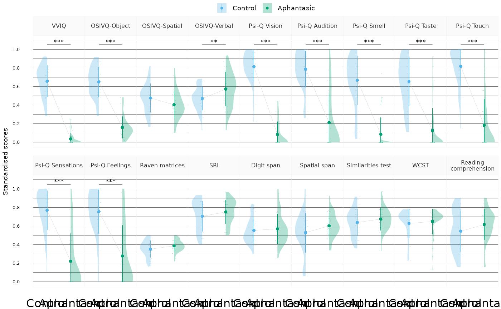

Plot the study variables' distributions as half-violins with point averages and error bars.
Source:R/plot_score_violins.R
plot_score_violins.RdThis function contains the machinery to produce the main figure for group comparisons in the article. By default, it adds significance labels at pre-defined locations for the group effects (based on the analysis results). It sets various defaults such as a palette for the groups and various geom options. Note that the default sizes are pretty small, this was designed to render best as small dimension PDF vector figures for journals.
The function is not very flexible (mostly because it was designed for a single plot initially). As it is, it is best suited to plot all the original variable with their significance labels, or a selection of scaled variables without significance labels (see examples).
Usage
plot_score_violins(
df,
add_signif = TRUE,
palette = c("#56B4E9", "#009E73"),
txt_big = 7,
txt_mid = 6,
txt_smol = 5,
dot_big = 0.35,
lw_big = 0.1,
lw_smol = 0.1,
jit_w = 0.3,
jit_h = 0,
alpha = 0.3,
nrow = 2
)Arguments
- df
A data frame in long format containing the variables to be plotted.
- add_signif
A logical indicating whether to add significance labels and lines to the plot at pre-defined locations. Default is
TRUE. If set toFALSE, the plot will not include any significance labels or lines.- palette
A character vector of colours to use for the groups. Default is
c("#56B4E9", "#009E73"), which are the colours used in the article.- txt_big
The size of the text for the main plot axis and legend. Default is
7.- txt_mid
The size of the text for the facet labels. Default is
6.- txt_smol
The size of the text for the y axis labels. Default is
5.- dot_big
The size of the points in the plot. Default is
0.35.- lw_big
The line width for the main plot lines. Default is
0.1.- lw_smol
The line width for the minor plot lines. Default is
0.1.- jit_w
The width of the jitter for the points in the plot. Default is
0.3.- jit_h
The height of the jitter for the points in the plot. Default is
0.- alpha
The alpha transparency for the points and the half-violins.
- nrow
The number of rows in the facet grid. Default is
2.
Examples
# The figure from the article
study_data |>
scale_vars() |>
get_longer() |>
filter_study_variables("original") |>
plot_score_violins(add_signif = TRUE, nrow = 2)

# Alternative use with reduced scaled variables only
merge_clusters(
df_raw = study_data,
df_red = scale_reduce_vars(study_data),
clustering = cluster_selected_vars(study_data)
) |>
scale_vars() |>
get_longer() |>
filter_study_variables("reduced_strict") |>
plot_score_violins(add_signif = FALSE, nrow = 2)